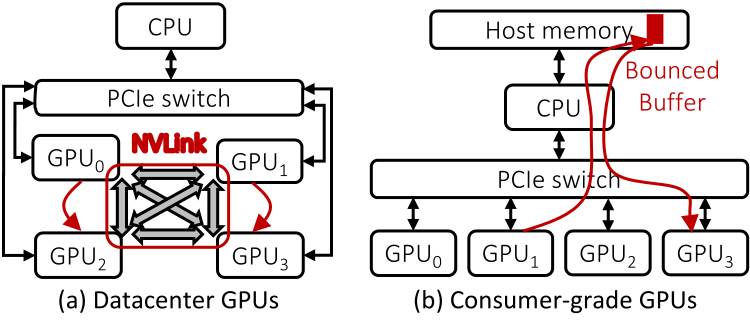
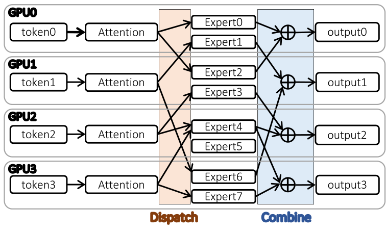
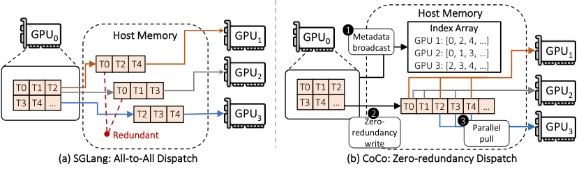
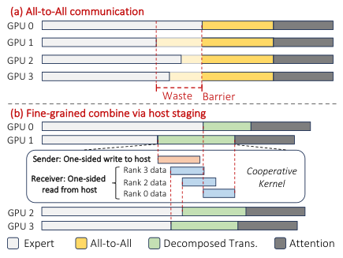
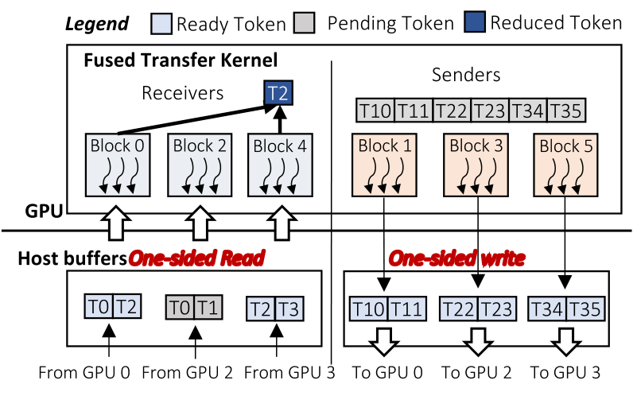
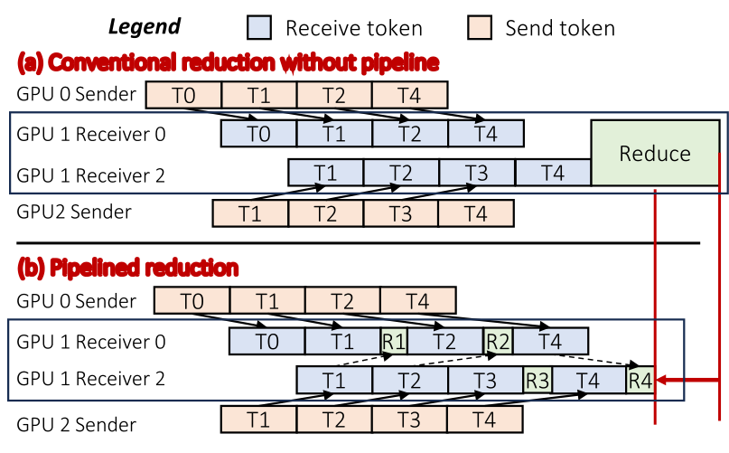
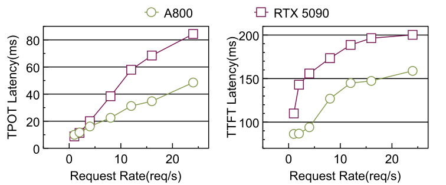
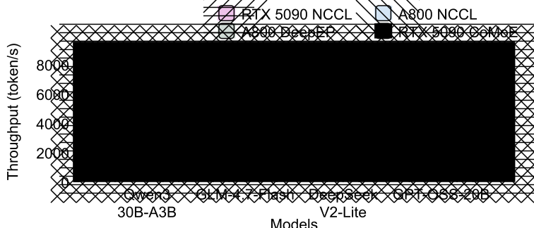

MoE推理离不开专家并行，token在GPU之间疯狂搬运。数据中心靠NVLink这种高速互联硬扛，消费级GPU只有可怜的PCIe带宽，还不支持P2P，通信直接成为瓶颈。
CoMoE的思路很妙：与其抱怨互联topology差，不如把主机内存扶正，让它从被动的中转缓冲区变成主动的路由中心，从根本上减少通信量、消灭同步等待。
数据中心GPU之间有NVLink全互联，消费级卡之间只能走PCIe switch，经CPU和主机内存中转。带宽差一个数量级，还没有P2P，MoE那种动辄把token发往3到5个GPU的路由模式，在这种topology上直接窒息。

专家并行里每个token要发给top-k个专家，专家散落在不同GPU上。实测显示，E=64、k=4的配置下，平均每个token要扇出到3.38个GPU。传统做法把dispatch建模成All-to-All集合通信，语义上就错了：All-to-All假设每个消息都独一无二，而这里是同一个token发多份。

动机很直接：消费级GPU算力不差、价格只有零头，如果能把通信短板补上，MoE推理就能走进个人与本地隐私部署。CoMoE要回答的就是这个问题。
先算一笔账：按All-to-All语义，源GPU要把同一个token给每个目标GPU各发一份，出口流量随目标数线性膨胀。E=128、k=8时平均扇出5.34，意味着一份数据要发5遍，纯属浪费。
CoMoE的解法是host-backed token multicast：源GPU把token往主机内存写一次，各目标GPU自己来取。写一次、读多次，冗余传输直接清零。主机内存从“中转站”升级成“分发中心”，语义从点对点变成一对多组播。

这招能成立，恰恰是因为消费级topology的“劣势”：反正所有跨卡流量都要过主机内存，不如把必经之路变成主动设计，而不是被动承受。
实测的dispatch开销印证了判断：token到GPU的平均扇出随模型规模增长，冗余传输占dispatch总流量的大头。组播化之后，这部分开销几乎归零，剩下的就是必要的有效载荷。
Combine阶段的传统做法更值得推翻：同步All-to-All要求所有GPU到齐才往下走，一个straggler拖住全局，而且规约计算要等所有数据到齐才能开始，白白浪费重叠机会。
CoMoE指出一个关键事实：重建某个token只需要它自己的专家输出到齐，跟别的token、别的GPU的进度毫无关系。MoE combine的最小同步单元是token，不是整个batch。全局同步从一开始就是过度设计。

于是把All-to-All拆成单边读写：发送方把专家输出单边写进主机staging buffer，接收方按token粒度单边读回来做规约。发送和接收彻底解耦，快的GPU不用等慢的，通信和计算还能重叠起来。

实现上用fused transfer kernel把传输和规约融进一个kernel：接收侧把token块读进来直接做reduce，发送侧写buffer不阻塞。流水线式的规约让combine延迟进一步被隐藏。

延迟先看：不同请求率下，TTFT平均降18.8%，TPOT平均降26.9%。负载越轻，通信占比越高，优化效果越明显；重载下排队延迟占主导，提升收窄，符合预期。

吞吐量更直观：Qwen3-30B-A3B从3914涨到5506（1.41倍），GPT-OSS-20B从4991涨到7304（1.46倍）。RTX 5090上的CoMoE直接对标A800基线，把消费级和数据中心的性能鸿沟填上了一大截。

性价比是杀手锏：硬件成本只有A800的23.4%，性能却接近。这意味着个人工作站、私有化部署也能跑大MoE模型，不用再为NVLink交税。
GPT-OSS上提升最大（TPOT降29.9%），因为它的hidden dim更大（2880 vs 2048），路由时搬运的hidden state更多，通信优化的收益自然更大。这也反证了瓶颈确实在通信不在计算。
参考：https://arxiv.org/html/2610.09424v1